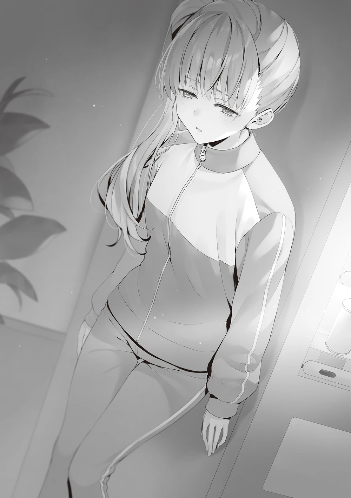

Saat 23:00’ü yani yatma saatini çoktan geçmişti.
Ortak odada herkes hâlâ uyanık gibi görünüyordu; sessizce sohbet ederek ya da telefonlarına bakarak vakit geçiriyorlardı.
Kampın başlarında, birbirini tanımayan öğrenciler ortamı germişti ama artık o ortamın nasıl bir hal aldığı umurumda değildi.
Hashimoto, Oda ve alt sınıflarla ara sıra sohbetlere katılıp, zaman zaman onaylayarak başımı sallarken, bir derleme videosu izlerken telefonum titredi.
[Uyanık mısın?]
Ekranın üst kısmında Hiyori’den bir bildirim geldi.
[Uyanığım. Bütün oda hâlâ uyanık, o yüzden merak etme.]
Hiyori’ye mesaj göndermeye devam etmesini kolaylaştırmak için böyle söyledim.
[Teşekkürler. Aslında, az önce Yamamura-san’ın ortada olmadığını fark ettim.]
Yamamura yok muydu? Işıklar söndükten sonra odadan çıkmak yasaktı.
[Odanın dışında mı demek istiyorsun? Telefonu nerede?]
[Odada kalmış gibi görünüyor. Şimdi gidip onu arasam mı diye düşünüyordum… Ayanokōji-kun, lütfen yardımını isteyebilir miyim?]
Hiyori, bu tür işlerde pek iyi değildi. Özellikle de gizlice hareket edemezse, devriye gezen bir öğretmen onu kolayca fark ederdi. Burada yardım istemesi doğru bir karar olmuştu. Kamp neredeyse bitmek üzereydi, ama Yamamura’yı tek başına bırakmamak daha iyi görünüyordu. Dünkü kart oyunu sırasında yüzünde özellikle kasvetli bir ifade vardı. Bunun olası bir nedeni aklıma geldi. Hemen gidip onu aramalıyım.
[Anlıyorum. Onu kontrol etmeye gideceğim, o yüzden Hiyori, lütfen odanda bekle. Yamamura’nın geri dönüp dönmediğini teyit etmek için bir yola ihtiyacımız var.]
Odadan hiç ayrılmadan orada beklemesinin daha yararlı olacağını ona söylediğimde, üzerinde ‘Teşekkür ederim’ yazan sevimli bir hayvan çıkartmasıyla birlikte bir cevap geldi.
“Kısa bir süreliğine dışarı çıkıyorum.”
“Ha? Hey, yatma saati geçti, biliyorsun değil mi? Eğer seni yakalarlarsa başın belaya girer.”
“Bir şey aramaya gidiyorum. Mümkün olduğunca fark edilmeden dönmeye çalışacağım. Bir aksilik çıkarsa bana o zaman kızabilirsiniz.”
Cevabımı verdiğimde, Hashimoto ve diğerleri bana kalmam için pek ısrar etmediler. Aksine, oldukça mutlu görünüyorlardı ve neşeyle uğurladılar. Işıklar kapalı olduğu için koridor elbette karanlık ve sessizdi.
Şimdi… nereden aramaya başlamalıydım? Amaçsızca dolaşmak verimli olmazdı. Kuralları çiğnemeyen bir tip olan Yamamura’nın odayı terk etmesinin iki olası nedeni vardı: ya biri onu çağırmıştı ya da odadan kendi isteğiyle çıkmıştı. Ancak bu durumda telefonunu geride bıraktığı için ilk seçeneğin olasılığı oldukça düşüktü.
Kendi rızasıyla ayrıldığı varsayımı üzerinden hareket ettim. Bir sonraki mesele ise bunun neden illa ki ışıklar söndükten sonra olmasıydı. Gecenin sessizliğinin aksine, zihnim sayısız kafa karıştırıcı düşünceyle dolup taşıyordu. Onca şeyden sonra insanın çevresinden kaçıp gitmek isteyeceği zamanlar olabilir elbet. Ancak böyle bir durumda, bilinçaltında insanın kendini huzurlu hissedebileceği bir yer araması hiç de garip olmazdı.
Miki Yamamura’nın düşünce dünyasıyla varılan sonuç… Şayet bir çıkarım yapacak olsaydım…
Sessizce lobiye göz attım. Hemen ardından birinin varlığını hissedip gölgelere saklandım. El feneriyle etrafta devriye gezen bir öğretmen gibi görünüyordu. Görüş zayıftı ama ışığın nereye vurduğunu seçmek kolay oluyordu. Çevreyi iyice aydınlatıyordu ancak odadan ayrılmış kural ihlali yapan bir öğrenciyi aktif olarak arıyor gibi bir hali yoktu.
Bunu sanki bir zorunluluktanmış gibi, işinin bir parçası olarak yapıyordu. Bu yüzden yanından geçmek çok kolay oldu ve biraz beklediğimde lobiden izi kayboldu. Görünüşe göre yemekhaneyi kontrol etmeye gitmişti. Gittiği yolu düşünürsek, daha sonra ya odalara ya da deneyimsel sınıflara gitmiş olmalıydı. Kısa bir duraklama oldu. Tereddüt etmeden doğrudan otomat makinesine yöneldim. Şansımın yüksek olduğuna dair bir hisse kapılmıştım ve tahminimi hemen doğrulayabildim.
Orada tek başına oturmak yerine otomat makinesine yaslanmış, başını eğmiş bir kız vardı. Koridor serindi belki de bu yüzden ısınmaya çalışıyordu. Ama bu zorlama bir çıkarım da olabilirdi. Eninde sonunda beni fark edeceğini düşünmüştüm ancak varlığımın hiç farkında değil gibiydi. Yüzünde hiçbir değişiklik yoktu, iç çekişi yoktu. Hiç kımıldamadan, öylece yerdeki tek bir noktaya dikmişti gözlerini.
“Öğretmenler muhtemelen burada bir öğrenci olabileceğine ihtimal bile vermiyorlardır.”
Onu öylece izlemeye devam edemedim, bu yüzden ona seslenmeye karar verdim.
“Ah… Eh!?”
Yamamura, irkildi ve yüzünü bana çevirdi. Gözleri korkuyla doluydu, ama benim olduğumu fark eder etmez, o korku dağıldı.
“N-n-n-neden buradasın…?”
“Seni bulurlarsa kızarlar. Bu olmadan önce seni geri götürmeye geldim.”
“Bulunmayacağıma… emindim… ama sen bulduysan, bu mazereti kullanamam, değil mi…?”
Yamamura öğretmenlerin gözetiminden kesinlikle kaçabilir ve hatta ortak odaya geri dönebilirdi.
“…Nasıl… gittiğimi fark ettin?”
“Özel bir nedeni yok. Hiyori gitmiş olduğunu fark etti ve bana bunu söyledi. Endişelenmişti.”
“Özür dilerim… Sadece gerçekten yalnız kalmak istedim…”
“Kendini banyoya kilitlemedikçe ortak odada yalnız kalamazsın.”
O, anladığını belirtmek için hafifçe başını salladı.
“Burada… biraz daha kalabilir miyim…?”
“Otomatın yanında olmak zorunda mısın?”
“Evet. Otomatın sesini dinlediğimde, kafamdaki gereksiz sesler kayboluyor…”
Bu davranış, Yamamura’nın kendini korumak için başvurduğu standart bir yöntem gibi görünüyordu.
“O halde sanırım tek yer burası. Ee? O gereksiz sesler kayboldu mu?”
“N-neden bunu soruyorsun…?”
“Eğer kaybolmazlarsa ve seni geri götürürsem, yine kaçabilirsin.”
“Ayrıca, bunu söylemekten hoşlanmıyorum ama işe yarıyor gibi görünmüyordu.”
“Genelde hemen dururlar ve sorun çözülür… genelde…”
Diğer bir deyişle, şimdi durum farklıydı. Yamamura’nın üzgün ifadesinden, ciddi bir şeylerin döndüğünü anlayabiliyordum.
“Eğer seni rahatsız eden bir şey varsa, bunu ifade etmeye çalışmalısın.”
“…Hayır. Ben iyiyim.”
“Gerçekten mi? Seni yaklaşık beş dakikadır izliyorum ve bana hiç öyle gelmedi.”
“Be-beş dakika mı!? Cidden mi…!?”
“Pardon, yalan söyledim. Yaklaşık 30 saniyeydi.”
Rastgele bir dakika sayısını bile sorgulamaması, çevresinde olup bitenlerin farkında olmadığını gösteriyordu.
“Sorunlarını başkalarına anlatmaktan hoşlanmıyor musun?”
“Hoşlanmak ya da hoşlanmamakla alakalı değil, sadece… o tür bir deneyimim yok…”
Bu konuyu fazla konuşmasak bile, Yamamura’nın hayatını hayal etmek zor değildi. Muhtemelen küçük yaşlardan itibaren çok fazla yalnız kalmış ve ağzını açmaktansa kapalı tutarak daha fazla zaman geçirmişti. Koşullarımız ve durumlarımız çok farklı olsa da, benzer deneyimlerimiz olduğunu anlayabiliyordum.
“Ben de konuşmakta pek iyi değilim. Küçük bir sorun olsa bile, genellikle bunu kendime saklarım ya da kendi başıma çözmeye çalışırım. Bu yüzden sorunlarım hakkında biriyle danışmak için nadiren fırsatım olur.”
“Sen de mi, Ayanokōji-kun? Ama bana göre… sen normal görünüyorsun.”
“Çok arkadaşın var gibi görünüyordu. Shiina-san’ın da öyle. O neşeli ve sevimli… Kıskandım…”
Sadece şimdiki zamana bakıyorsa, muhtemelen böyle hissetmesi mantıksız değildi. Ancak, herkesin geçmişinde, şu anki hallerinden farklı, daha olgunlaşmamış bir tarafı vardır.
“Geçen yılın başlarında nasıl olduğumu hayal edebiliyor musun?”
O zamanlar muhtemelen Sakayanagi’ye yardım etmiyordu, bu yüzden bilmesi pek mümkün değildi.
“…Şimdi sen söyleyince… Hiçbir şey bilmiyorum.”
“Değil mi? Yani sadece pek çok insanda izlenim bırakmış bir öğrenci olmadığımdan emin olabilirdin. Neyse ki, neşeli sınıf arkadaşlarımın etkisiyle bazı ilişkiler kurabildim, ama bu benim kendi başıma ayarladığım bir şey değildi.”
“Ama neden şimdi böyle oldun?”
“Çevremdekilerle yakın değildim, ama en azından son iki yıldır, aradaki mesafeyi yavaş yavaş kapatmaya çalışmaya başladım. Sanırım bunun bir etkisi oldu. O dönemden itibaren söylemek istediklerimi ifade edebilmeye başladım.”
Yamamura hâlâ anlayamıyordu.
“Ben… muhtemelen korkuyorum. Düşüncelerimi dile getirmekten. Ve o düşüncelerimin istemeden yayılmasından. Tanınmaktan korkuyorum…”
Yamamura’nın şimdiye kadarki tarzı bunun tam tersiydi.
Başkalarının düşüncelerini gizlice yakalayıp bunları üçüncü bir kişiye aktarmak.
‘Bilen’ olmaktan ‘bilinen’ olmaya geçerken güçlü bir direnç hissetmek hiç de mantıksız değildi.
“Seni zorlamayacağım. Kararı kendin vermelisin.”
Onu fazla rahatsız etmeden, otomatın önüne, biraz mesafe bırakarak yavaşça oturdum.
Sırtımdan otomatın hafif titreşimini ve fanın sesini hissedebiliyordum.
Yalnızlıktan korkan tek kişi Yamamura değildi.
İster Yōsuke, ister Kei, Ryūen, Sakayanagi ya da başka bir öğrenci olsun, insan doğası aynıydı.
Yalnızlığa dayanamayanlar, tek başlarına yaşayamazlardı.
Bu yüzden karşılığında hiçbir şey beklemeden yanında duranlar önemliydi.
Her ne kadar bunun benim için geçerli olduğunu hissetmesem de, bunun bir cevap olduğunu anladım.
İçinde barındırdığı çelişkiyi.
Hayır, bu gerçek artık önemli değil.
Karşımdaki Yamamura aptal değildi. Yalnızlığı aramıyordu, yalnızlığın doğru olduğunu da düşünmüyordu. Eğer ona uygun bir şekilde yardım eli uzatabilecek biri olsaydı, hata yapmazdı.
“…Seninle konuşabilir miyim?”
Herhangi bir düşmanlık hissetmeyen Yamamura, içinden atamadığı düşüncelerini dile getirmeye başladı.
“Son özel sınav bittiğinden beri, aklımda tek bir soru var…”
Bu, hayatta kalma ve eleme özel sınavı sırasında A Sınıfı’nda yaşananların ayrıntılarıyla ilgiliydi. Yenilginin kesin olduğu ve bir öğrencinin elenmesi gerektiği bir durumda, Sakayanagi kura çekmeyi tercih etmişti. Nasıl karar verirse versin, bunun artıları ve eksileri olacaktı.
Herkesin yetenekleri aynı olmadığı için, ister isimlerini doğrudan söylesin, ister taş-kağıt-makas oynasın, her zaman memnun olmayanlar olacaktı. Kendisi dışındaki tüm öğrencileri eşit gören Sakayanagi için kura muhtemelen en adil karardı. Ancak bunun bir hata olduğunu fark etmiş olmalıydı. Çevresindekiler tarafından sevilmese bile, kendisi için en uygun olan kişiyi tutmalıydı.
Kamuro kalsaydı, Sakayanagi’nin zayıflığı ortaya çıkmazdı.
Ancak incinen tek kişi Sakayanagi değildi. Yamamura, çekilişteki son iki seçeneği, yani yaşamı ve ölümü birbirinden ayıran terazinin bir tarafında duruyordu.
“Çekilişi yapmakta tereddüt ettiğimde, Sakayanagi-san çekilişi durduracağını söyledi. Çekilişi yapmaya cesaret edememek, çekim yapmamakla aynı şeydi…”
Eğer uzun süre çekmeyi reddederse, bu kesinlikle yapabileceği bir seçimdi. Ama Yamamura, bunu dikkatli bir değerlendirme olarak nitelendirmenin çok aceleci bir yargı olduğunu düşünüyordu.
“Sakayanagi, Kamuro’ya değer veriyor ve seni dışlamaya mı çalışıyordu?”
Yamamura sessizce başını salladı. Bu sadece bir tahmin değil, Yamamura’nın inancıydı.
“O anda Sakayanagi-san’ın benim çekilmemi istediğini çok net hissettim.”
Ve sözlerine devam etti.
“Bunun kaçınılmaz olduğunu anlıyorum. En azından, beni ve Kamuro-san’ı karşılaştırdığımızda, aradaki değer farkı açıktı. Özel muamele görmek istemedim. Hatta açgözlü davranıp bir arkadaş olarak görülmek bile istemedim. Ama… Varlığımın bir anda bir kenara atılabilecek bir şey olduğunu öğrenince şok oldum… Oysa beni değerli bir insansın diyerek kullanmıştı…”
Sakayanagi, her zaman yalnız olan Yamamura’yı bulmuş ve yeteneğine büyük değer vermişti. Ancak, onu Kamuro ile karşılaştırdığında, ikisi arasındaki farkın o kadar büyük olduğunu fark etti ki, bu bir rekabet bile değildi.
Sonuçta Kamuro’nun seçileceğini biliyordu, ama onun tereddüt edeceğini sanmıştı. Yamamura’nın, kendisi için önemsiz gördüğü o küçük dileği, acımasızca reddedilmişti.
“Sakayanagi, seninle Kamuro arasında gerçekten bir fark görmüş olabilir, ama senin önemsiz olduğunu düşünmesi ya da düşünmemesi, bu ayrı bir mesele değil mi?”
“…Buna inanmak istiyorum, ama…”
Muhtemelen o günden beri Sakayanagi ile hiç temas kurmamıştı. Yani bu kadar zamandır kendini sorguluyor olmalıydı.
“Bu kamp sırasında Sakayanagi-san ile konuşmayı düşünüyordum, ama cesaretimi toplayamadım. Ona seslenemedim…”
Onu birkaç kez görmüş olmasına rağmen, onunla konuşmayı hiç başaramamış gibi görünüyordu. Genelde kendisiyle konuşulmasını bekleyen Yamamura için bu, oldukça büyük bir engel olmalıydı.
“Düşündüğümden daha fazla kişi ona yapışmıştı. Tüm bunların ortasında, Tokitō-kun başını belaya soktu… Zor bir dönem gibi görünüyordu.”

Yamamura, Tokitō’nun morali bozuk Sakayanagi’ye yardım eli uzatmaya çalıştığını açıklayarak düşüncelerini dile getirdi. Ancak bu olayın şahit olması, onun deneyimsel sınıfa çağrılıp sorguya çekilmesine neden oldu.
“Sonuç olarak, Tokitō-kun… Ryūen-kun ve grubu tarafından zorla zaptedildi ve tehdit edildi.”
Yıl sonu sınavlarına hazırlanırken gergin olan Ryūen açısından bu muhtemelen uygun bir karardı. Gelecekte savaşacakları rakip beklenmedik bir şekilde zayıf çıkarsa, ya onları rahat bırakacak ya da daha da zayıflatacaklardı. Her ne kadar bazı kısımları görmezden gelinemeyecek kadar radikal olsa da.
Bir sonraki dönem sonu sınavına son derece hazırlıklı bir şekilde girmek niyetiyle, güçlü bir tetikte olma hissi geliştirmiş görünüyordu. Yıl sonu sınavında Sakayanagi ile rekabet edeceği kesinleşen Ryūen için, onu kışkırtıp yeniden canlandırmak istemediğini düşünmek doğaldı. Beklenmedik bir yenilgiyle tökezlediği bu durumdan yararlanmak için çaresizce çabalıyor gibiydi.
Diğer bir deyişle, bu durum Sakayanagi’nin hafife alınamayacak ve zayıf yönleri olmayan bir rakip olduğunun kanıtıydı. Tokitō’nun olayların akışındaki tasfiyesinin çabucak sona ermesi bekleniyordu. Ancak, Tokitō’nun grup arkadaşları Hōsen ve Utomiya da olaya karıştı ve bir kavga çıkma riski vardı. Gürültüyü duyan öğrenci sayısı birdenbire artınca ve onlar dağıldığında durum çözülmüş gibi görünüyordu.
“Ama hayran kaldım. Her şeyi izledin ve kimse fark etmedi mi?”
“Elimden gelen tek şey bu…”
Yamamura, göze çarpmayan yapısını kullanarak bilgi toplamak için biçilmiş kaftandı. Sakayanagi’nin bu yeteneği hemen fark edip kullanabilme becerisi bir kez daha etkileyiciydi. Bu sefer Yamamura, Sakayanagi için endişelendirildiğinden o sahneyi gözlemleyebilmişti. Gerçekten de, Sakayanagi artık düşüşe geçmişti.
“Ne yapmak istiyorsun?”
“Ha…?”
“Bir sınıf arkadaşı olarak ve muhtemelen Sakayanagi tarafından terk edilecek biri olarak, benden ne yapmamı istiyorsun?”
“Ben, şey…”
“Duygularını duymak istiyorum.”
“İki dileğim var. Birincisi… O zamanlar benim hakkımda ne düşündüğünü ve şimdi ne düşündüğünü bilmek istiyorum.”
“Peki ya diğeri?”
“… Sanırım… Sakayanagi-san’ın kaybetmesi yakışmaz… Yıl sonu sınavında zorlanmasını görmek istemiyorum… Umarım o kazanır.”
Kişisel bir hesap yoktu, sırf A sınıfı öğrencisi olduğu için kazanmasını istemek yoktu, sadece bir öğrenciye karşı içten bir endişe vardı.
“Öyle mi…? Anlıyorum.”
Sakayanagi’nin biraz teşvik edilmeye ihtiyacı olabilir. Ve bu yakında olmalı.
“Neden ona söylemeyi denemiyorsun? Kimsenin senin eylemlerini kınama hakkı yok.”
“Ya… ya… ya beni dinlemek bile istemezse…?”
“O zaman, diyelim ki, ben otomatların arasına sıkışıp bu konuyu konuşurum.”
Bunu söylediğimde, Yamamura otomatlara biraz utangaçça baktı ve başını salladı.